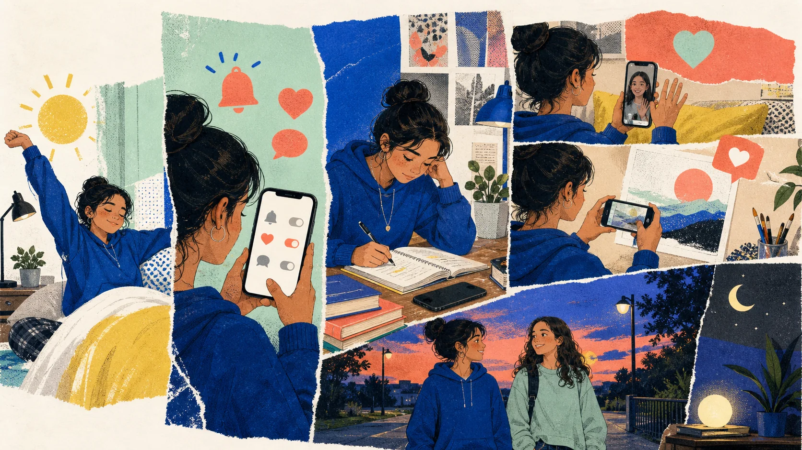
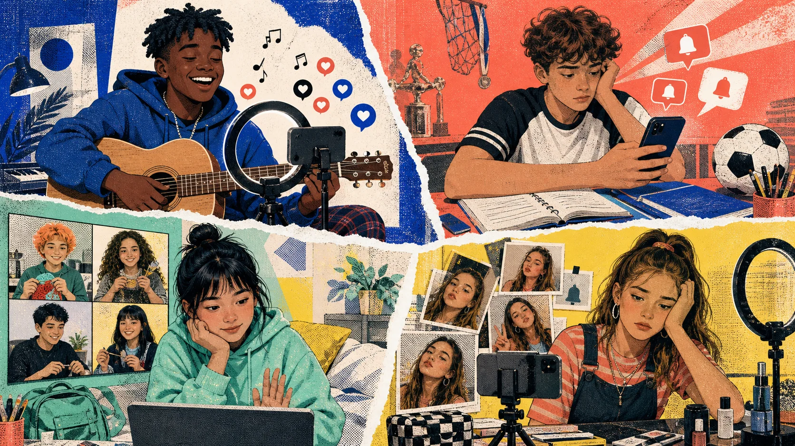

Background
Say what was happening before the interruption.
“We were walking home…”
Social media: good or bad? Read the evidence. Question the claims. Build a verdict that is stronger than a like.
Choose the feeling that best describes your online experience this week. Then explain one reason—without naming an app.
In pairs, retell one harmless accident from the last lesson. Your partner listens for the moving background and the sudden event.
Say what was happening before the interruption.
“We were walking home…”
Add one short event with when or while.
“…when a ball hit my bag.”
Add one funny, safe visual detail. Your partner asks one follow-up question.
“What happened next?”
Read a balanced article for gist, detail, sequence, and vocabulary in context.
Separate facts, opinions, examples, and reasonable inferences.
Agree, disagree, ask follow-up questions, and explain personal boundaries.
Design a healthier feed and deliver a short verdict using evidence from the text.
A changing list of posts shown to you.
Example: My feed is full of art videos.
To move through content on a screen.
Example: I scrolled for ten minutes.
To take attention away from something important.
Example: Alerts distract me from homework.
To notice how two things or people are similar or different.
Example: Don't compare your first try with an expert's work.
Correct and safe to trust.
Example: Check a reliable source.
Control over who can see your personal information.
Example: Review your privacy settings.
To share another person's online post again.
Example: Read the full story before you repost it.
The reason or plan behind an action.
Example: Open the app with a clear intention.
Tap a word, notice the stressed beat in capitals, then echo it twice: careful → natural.
A teenager tests new social-media habits for one week.
Which ideas will probably appear? Select three, then compare predictions.
Sixteen-year-old Maya had many good reasons to like social media. She used it to talk to a cousin who lived far away, watch short art tutorials, and make plans with her school club. However, during exam week, something changed.
One evening, Maya opened her phone to answer one message. When she looked at the clock again, forty minutes had disappeared. Later, she compared her sketch with the perfect artwork in her feed and nearly threw it away.
The next day, Maya's English teacher asked the class to keep a media diary. Maya turned the task into a seven-day experiment. She did not want to delete everything. She wanted to discover a more useful question: Was she choosing what to do online, or was the feed choosing for her?

First, Maya turned off alerts that were not important and left her phone across the room while she studied. She unfollowed accounts that usually made her feel worse, but kept the creators who taught her something or made her laugh.
She did not stop posting. On Wednesday, she shared an honest photo of an unfinished drawing and asked for advice. Several people sent useful ideas. On Friday, her school club used an online poll to choose an activity for a charity event. Maya also had a long video call with her cousin.
The experiment showed her that social media could support connection, learning, and creativity. The difference was that she opened it with an intention, not simply because a notification appeared.
Find:
① two changes to her environment
② two creative or social benefits
③ one sentence that explains the main difference
Cover the article. Retell Maya's week using:
First… · On Wednesday… · On Friday… · The difference was…
There were still risks. A group-chat message claimed that Monday's test was cancelled, but nobody knew the original source. Maya checked the school's official page before she believed it. Another post showed only part of a conversation and caused an argument. The missing context changed its meaning.
Late at night, Maya still felt the wish to keep scrolling. Her experiment was not magic. It simply helped her notice the moment when a useful visit became an automatic habit.
After seven days, Maya's verdict was clear: social media was neither a hero nor a villain. It was a powerful tool that could amplify good or bad choices. Her new rules were simple: use it with a purpose, pause before you repost, protect your privacy, notice how content makes you feel, and put the phone away when a person needs your attention.
Her biggest discovery was not a number. It was one question: “Why am I opening this now?”
“She used it to talk to a cousin who lived far away.”
“Forty minutes had disappeared.”
“Maya checked the school's official page.”
“Several people sent useful ideas.”
“The missing context changed its meaning.”
“She opened it with an intention.”
“A powerful tool that could amplify good or bad choices.”
“The missing context changed its meaning.”
“Nobody knew the original source.”
“A useful visit became an automatic habit.”
Maya turned off some notifications.
Maya's five rules are the best rules for every teenager.
The positive comments probably encouraged Maya to continue drawing.
The school club used an online poll.
Before the experiment, Maya often reacted to alerts automatically.
Deleting every account is the only healthy solution.
Answer → give an example → ask your partner a follow-up.

Include two pieces of reading evidence, one counterargument, one example, and one practical rule.
Write six sentences using feed, scroll, distract, reliable, privacy, and intention.
Choose one paragraph from today's article. Write its main idea and two supporting details.
For one safe evening, note three moments you open social media: time, purpose, and feeling afterward. Do not include private messages or account names.
Prepare a 45-second answer: “What is one online habit you would recommend—and why?” Optional challenge: include a counterargument.